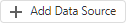

Field List
The Field List displays the schema of a report's data sources. This panel enables you to manage report data sources and parameters, add calculated fields and create bound report controls.
Manage Report Data Sources
The Field List shows available report data sources and their structure.

The following actions are available in the Field List for data source customization:
| Button | Description |
|---|---|
|  | Invokes the Data Source Wizard. |
 |
Renames the selected data source. |
| Rebuilds the generated schema for the selected data source. | |
 |
Invokes the Master-Detail Relation Editor. |
| Adds a calculated field. | |
 |
Invokes the Create a Query or Select a Stored Procedure wizard page. |
 |
Removes the selected data source. |
The following actions are available for query customization:
| Button | Description |
|---|---|
|
Removes the selected query. |
|
Invokes the Create a Query or Select a Stored Procedure wizard page. |
You can also right-click a data source to access these actions in a context menu:

Bind controls to data
Dropping a field onto a report's surface creates a new report control bound to a corresponding field.

Dropping a field onto an existing control binds this control to a corresponding field.

Create tables
Dropping an entire data table onto a report creates a table with its columns bound to fields contained in the data table.

To select multiple fields, click them while pressing the Ctrl or Shift key. Dropping these fields onto a report creates a new table with its cells bound to corresponding fields.

Select multiple data fields, a query, or a table in the Field List. Hold Shift when you drag the fields and drop them onto the report design area. This creates a data table with data field names.
Data shaping operations
In addition, the Field List can help you solve the following tasks:
Add calculated fields to data columns for performing various calculations in a report.

Manage the collection of report parameters.

You can also right-click a parameter to access these actions in a context menu: